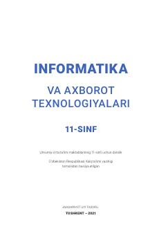

IV11-sinf o‘quvchilari uchun mo‘ljallangan informatika va axborot texnologiyalari fanidan darslik.
Ushbu darslik umumiy o‘rta ta’lim maktablarining 11-sinf o‘quvchilari uchun mo‘ljallangan bo‘lib, ma’lumotlar bazasi, sun’iy intellekt, bulutli texnologiyalar va axborot xavfsizligi kabi zamonaviy mavzularni qamrab oladi. Kitob nazariy bilimlar bilan bir qatorda amaliy ko‘nikmalarni rivojlantirishga qaratilgan darslarni o‘z ichiga oladi.